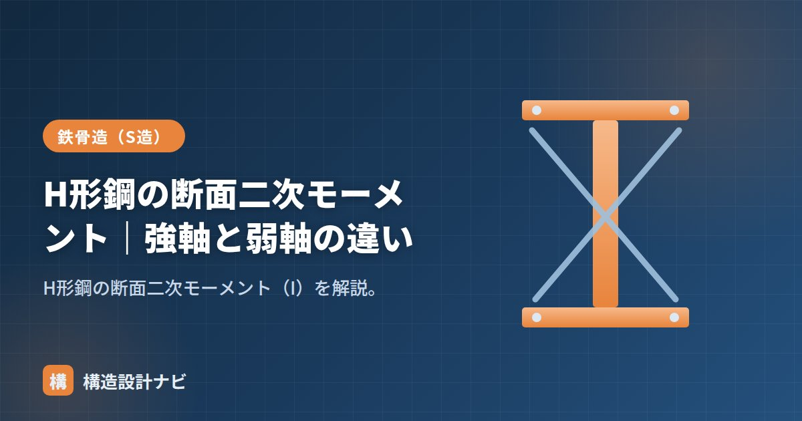

H形鋼の断面二次モーメント｜強軸と弱軸の違い

断面二次モーメント（I）は、曲げにくさ（曲げ剛性）を表す断面性能です。H形鋼は向きによってIが大きく変わり、強軸と弱軸を区別することがとても重要です。
強軸（Ix）と弱軸（Iy）の違い
H形鋼を曲げる向きによって、断面二次モーメントは2種類あります。
| 強軸（x軸）Ix | 弱軸（y軸）Iy | |
|---|---|---|
| 曲げの向き | せい方向に曲げる（フランジが上下） | 幅方向に曲げる |
| 値 | 大きい | 小さい |
| 使い方 | 梁はこの向きで使う | 横座屈・2軸曲げで効く |
材料が中立軸から遠い上下フランジに集まる強軸はIが大きく、フランジが中立軸の近くに来る弱軸はIが小さくなります。同じH形鋼でも、せいを縦にして使う（強軸で曲げる）と何倍も曲げに強いのはこのためです。
求め方の公式
弱軸：Iy = [ 2·t2·B³ + (H − 2·t2)·t1³ ] / 12 H：せい／B：フランジ幅／t1：ウェブ厚／t2：フランジ厚
強軸は「外形BHの矩形から、ウェブ両脇の空白を引く」考え方、弱軸は「フランジ2枚＋ウェブ」を足し合わせる考え方です。
代表サイズの一覧（強軸Ix・弱軸Iy）
| 呼称（mm） | Ix(cm⁴) | Iy(cm⁴) | Ix/Iy |
|---|---|---|---|
| H-400×200×8×13（細幅） | 23700 | 1740 | 約13.6 |
| H-300×300×10×15（広幅） | 20400 | 6750 | 約3.0 |
| H-400×400×13×21（広幅） | 66600 | 22400 | 約3.0 |
細幅はIx/Iyが大きく強軸に偏った断面（梁向き）、広幅はIyも比較的大きく2方向に強い断面（柱向き）であることが数値からわかります（→広幅・中幅・細幅）。
梁は強軸で曲げを受けるように架けるのが原則。弱軸方向は横座屈に弱いため、横補剛で圧縮フランジを支えます。
そこから出す「断面係数」、代表値の「断面性能一覧」、基礎理論の「断面二次モーメントとは？」をどうぞ。
よくある質問
Q1. なぜ同じH形鋼でも強軸と弱軸で断面二次モーメントがこれほど違うのですか？
断面二次モーメントは「中立軸から離れた位置にある材料ほど効く（距離の2乗で効く）」量だからです。強軸まわりでは上下フランジが中立軸から大きく離れているためIxが大きく、弱軸まわりではフランジ幅の範囲でしか材料が広がらないためIyは小さくなります。この差が、梁をウェブ縦向き（強軸曲げ）で使う理由です。
Q2. たわみの計算にはIxとZxのどちらを使いますか？
たわみは断面二次モーメントIxを使います（例：等分布荷重の単純梁の中央たわみ δ＝5wL⁴/384EIx）。断面係数Zは応力度（強度）の検討に使う量で、役割が異なります。両者を取り違えると検討結果を誤るので注意してください。
形鋼表を照合していて気づくのは、たわみの検討でIxとZxを取り違える若手が意外と多いことです。断面二次モーメントは変形、断面係数は応力度の話だと最初に整理しておかないと、計算書の後段で数値の意味を見失いがちです。
まとめ
- 断面二次モーメントIは曲げにくさ。H形鋼は強軸Ixと弱軸Iyで大きく異なる。
- Ix=[BH³−(B−t1)(H−2t2)³]/12、Iy=[2t2·B³+(H−2t2)t1³]/12。
- 梁は強軸で使う。細幅は梁向き、広幅は2方向に強く柱向き。